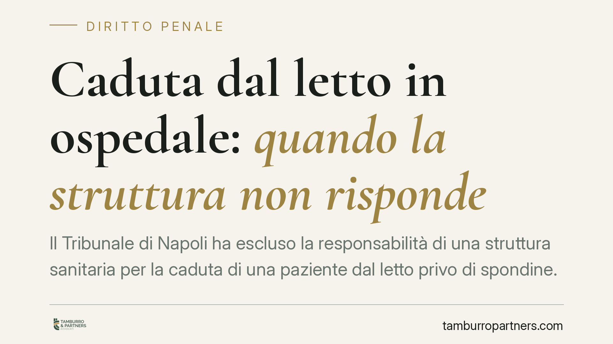

Caduta dal letto in ospedale: quando la struttura non risponde
Il Tribunale di Napoli ha escluso la responsabilità di una struttura sanitaria per la caduta di una paziente dal letto privo di spondine. La pronuncia, in materia di responsabilità civile sanitaria, ribadisce un principio chiave: il dovere di custodia si misura sulle condizioni concrete del paziente. Non esiste responsabilità oggettiva della struttura per ogni evento avverso.

Il caso
Una paziente ricoverata cade dal proprio letto, privo di spondine di protezione. La struttura viene chiamata a rispondere del danno. Il Tribunale di Napoli, con una pronuncia di merito (estremi in corso di pubblicazione, da verificare), rigetta la domanda: la paziente era vigile, orientata e autonoma nei movimenti. In queste condizioni, l'assenza delle spondine non integra un difetto di custodia imputabile alla struttura.
È una precisazione importante, perché mostra come la responsabilità sanitaria non sia automatica: non ogni caduta durante il ricovero genera un obbligo risarcitorio.
Inquadramento normativo
La cornice attuale è la Legge 8 marzo 2017, n. 24 (cosiddetta Gelli-Bianco), che ha ridisegnato il regime della responsabilità sanitaria introducendo un doppio binario.
La struttura risponde a titolo contrattuale ai sensi dell'art. 1218 del Codice civile: risponde cioè dell'inadempimento delle proprie obbligazioni, incluse quelle organizzative e di sicurezza. Il medico o l'esercente la professione sanitaria, invece, risponde di regola a titolo extracontrattuale ai sensi dell'art. 2043 c.c., salvo abbia agito nell'ambito di un'obbligazione contrattuale assunta con il paziente.
Sul piano probatorio, il paziente danneggiato deve allegare l'inadempimento e provare il nesso causale tra la condotta della struttura e il danno subito. La struttura, per liberarsi, deve dimostrare di avere adempiuto correttamente o che l'evento è dipeso da causa a essa non imputabile.
Proprio qui si colloca la decisione napoletana: se la paziente era autonoma, l'assenza di spondine non rappresenta un inadempimento organizzativo. Anzi, le spondine possono essere controproducenti. Su un paziente vigile e mobile, un tentativo di scavalcamento può aumentare l'altezza della caduta e la gravità delle lesioni. La loro applicazione, in alcuni casi, configura una misura di contenzione che va valutata con cautela clinica, non un obbligo automatico.
Implicazioni pratiche
Il principio guida è netto: la responsabilità della struttura sanitaria non è oggettiva. Il dovere di custodia e vigilanza si calibra sulle condizioni concrete del paziente al momento dell'evento.
Su un paziente disorientato, sedato, anziano con deficit cognitivi o a rischio di caduta documentato, la struttura ha un obbligo di protezione più intenso: qui l'assenza di misure adeguate può fondare la responsabilità. Su un paziente lucido e autosufficiente, quello stesso obbligo si attenua.
Per chi valuta un'azione risarcitoria, il punto decisivo non è la caduta in sé, ma la coerenza tra le condizioni cliniche del paziente e le misure adottate. La documentazione sanitaria — cartella clinica, valutazione del rischio di caduta, diario infermieristico — diventa l'elemento centrale.
Cosa fare in concreto
- Acquisire subito la documentazione clinica completa: cartella, scheda di valutazione del rischio caduta, diario infermieristico e verbali dell'evento.
- Verificare la classificazione del rischio: controllare se il paziente era stato inquadrato come soggetto a rischio e quali misure erano state previste dal protocollo interno.
- Sottoporre il materiale a valutazione medico-legale prima di avviare qualsiasi azione: è opportuno accertare il nesso causale e la coerenza delle misure adottate con le condizioni cliniche.
- Ricostruire lo stato del paziente al momento della caduta: vigilanza, orientamento, autonomia motoria e terapia in corso sono elementi dirimenti.
- Per le strutture: mantenere tracciabilità delle valutazioni del rischio e delle scelte cliniche sull'uso o meno di misure di contenzione.
Conclusione
La pronuncia del Tribunale di Napoli conferma un orientamento equilibrato: la responsabilità sanitaria richiede un inadempimento concreto, non il semplice verificarsi di un danno. Nel contenzioso sulle cadute intraospedaliere, la partita si gioca sulla documentazione e sulla corrispondenza tra rischio clinico e misure adottate, non su presunzioni automatiche a carico della struttura.
Una valutazione preliminare accurata è quindi essenziale sia per chi intende agire sia per chi deve difendersi.
---
Contributo informativo a cura di Tamburro & Partners - Avv. Giuseppe Tamburro. Non costituisce parere legale.
Ogni condominio ha una storia a sé.
Se gestisci un'amministrazione e vuoi un confronto su una specifica questione condominiale, scrivi allo studio. Ti rispondiamo entro un giorno lavorativo.